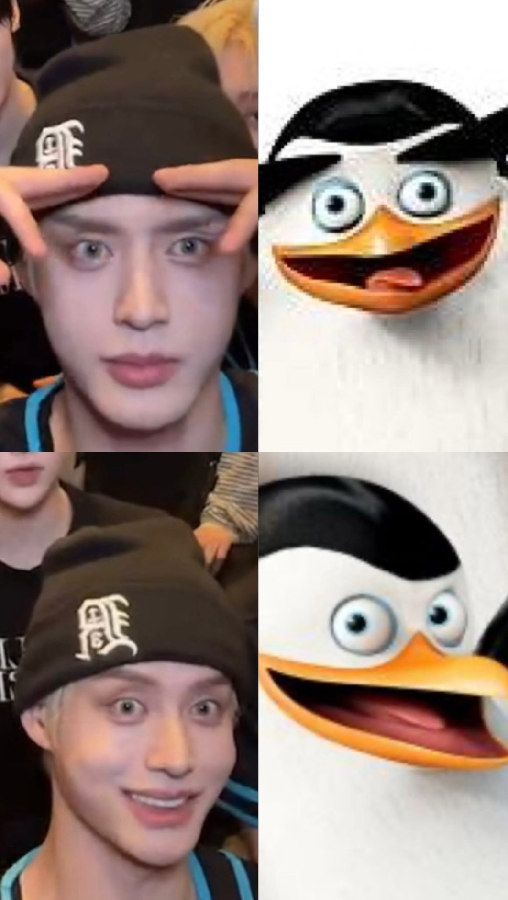
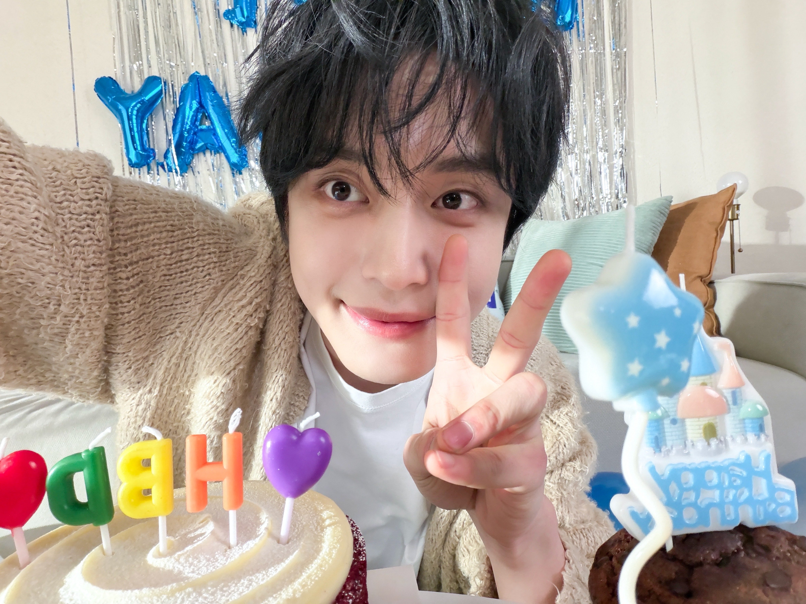
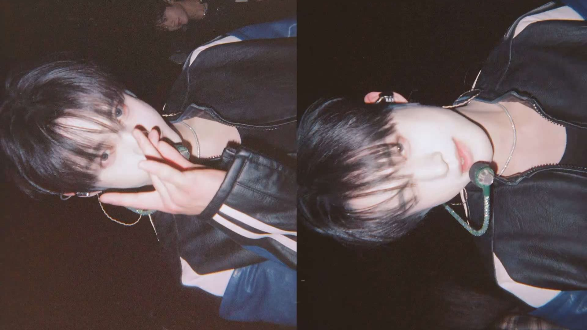
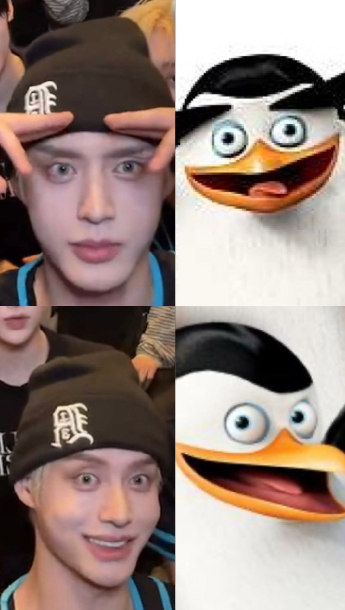
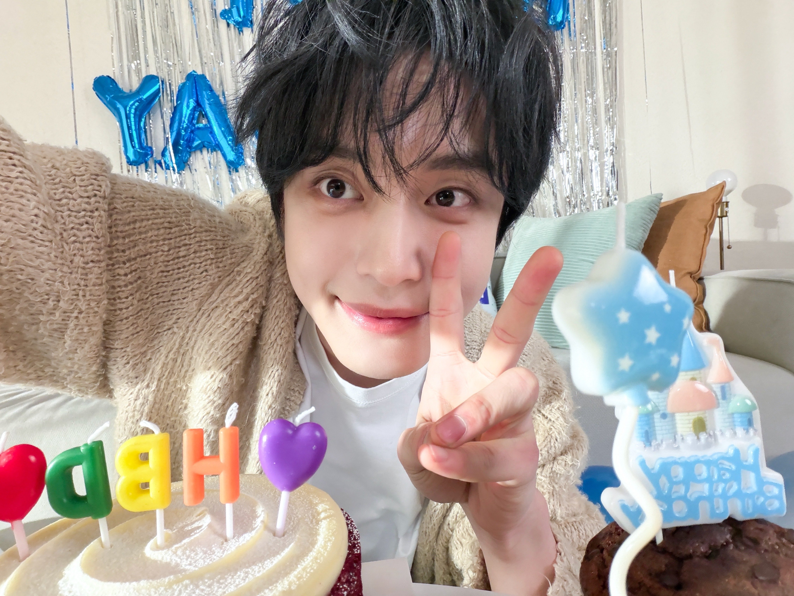
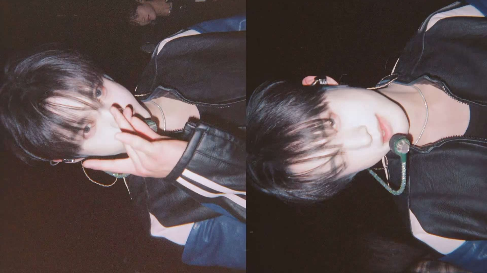

金地雄-Kim JiWoong
基本資料
生日：1998/12/14
身高：181cm
MBTI：ENFJ
國籍：韓國
動物塑：
蝴蝶(本人自己覺得，四次元腦袋我不懂)、
馬達加斯加企鵝(by 朴乾旭)
個人魅力點：
平時說話低沉，但唱歌很柔、
反差萌(團隊裡的大哥，但個性堪比忙內、
玩遊戲屬於混亂邪惡，若抽到好人身分，
會變成好人間的臥底[自動投靠邪惡])
經歷
金地雄對舞蹈很感興趣，童年時，他夢想成為一名歌手，但遭到父母的反對。 最終，他開始試鏡以贏得他們的信任。 據說，他在全國小學直排賽中獲得第三名，在全國小學接力賽中獲得總成績第四名。 他喜歡騎自行車，所以他說自己有騎車從原州到釜山往返400公里的經歷。
出道經歷
2016年8月2日未滿18歲的他作為NA娛樂的5人男子組合INX中的成員以歌手身分出道，以藝名地南（韓語：지남）首次亮相。
之後因為經紀公司對團員們的苛刻行為，以專屬合約無效為由向經紀公司提起訴訟，以勝訴結束了自己的活動，團體於2017年底解散。
在2016年以INX組合出道之前，他已經做了將近七年的練習生。
2017年，他成為DS&A Entertainment旗下預備出道的10人男子團體A-TEEN的成員，並預計於2018年9月在日本出道，然而出道計畫最終被取消。
之後他加入Core Contents Media計劃推出的5人組合「B.I.T」，並預計以藝名「KING」出道，但團體出道計畫再次被取消，最終還是沒能出道。
2020年他成為真人生存節目《Burn Up 30》的參賽者，並獲得了男子組的第一名。奪冠後，與女子組的第一名金敏貞（韓語：김민정）一起發行了單曲專輯《Sick of Love》。
2021年他在網路劇《甜甜的那傢伙 The Sweet Blood》（韓語：달달한 그놈）中首次以演員身分出道，獲得了很多關注。
他選擇成為一名演員，是因為他想自由地展示自己的各個方面，2022年他與尹㷂穦共同主演的BL網路劇《想咬一口的嘴唇》、《超速配冤家》，
分別於2月3日及10月13日在韓國與台灣等串流平台上首播。
播出後人氣上升，以此獲得了不少海內外粉絲，並兩度與尹㷂穦一起參加於韓國舉辦的粉絲見面會。
他曾四度以男團INX成員的身分造訪台灣，也曾與INX團員和工作人員在台灣的宿舍進行長達數月的Long Stay生活,
並在《想咬一口的嘴唇》的訪問影片中說明自己在大概21歲時曾來過台灣旅遊，覺得的台灣雞排很好吃，讓他難忘，
想再去吃雞排或其他美食。
音樂作品
2021/06/08：Sick of Love
2022/10/27：Dream of you[豐德別墅304號隱情 OST]
2022/10/27：那種人[豐德別墅304號隱情 OST]
2025/06/16：《競選夥伴》 OST Special Track
2025/12/14：1214°C
電視劇
2023：壞媽媽
網路劇
2021：甜甜的那傢伙
2022：Don't Lie 羅熙
2022：想咬一口的嘴唇
2022：Pro, Teen
2022：豐德別墅304號隱情/超速配冤家
節目主持
2023/08/03：《M Countdown》EP808 與章昊、成韓彬擔任特別MC
2023/11/27：SBS《人氣歌謠》EP808 擔任特別MC
2025/09/12：KBS《Music Bank》EP1264 擔任特別MC
綜藝節目
固定出演
2023/08/30日-11月15日：《少年偵探 金地雄》
綜藝節目
2016/08/14-11/6：天團星計畫(以INX成員身分出演)
2016/09/10：全球中文音樂榜上榜 (臺灣版)(以INX成員身分出演)
2016/09/14：完全娛樂(以INX成員身分出演)
2017/01/28：我愛偶像(以INX成員身分出演)
2017/02/08：我愛偶像(以INX成員身分出演)
2020/06/26：Burn Up 男子組第一名
MV出演
2023/03/20：NUMBER BOY
品牌活動
2023/07/06：GUCCI Valigeria FW 2023 與成韓彬
2023/09/06：Shinsegae × Frieze Seoul VIP Party 與成韓彬、RICKY
2023/11/24：W KOREA's Love Your W 與章昊、成韓彬
2024/10/22：GUCCI Cultural Month Exhibition 與章昊、成韓彬
2025/02/07：GUCCI 現代百貨旗艦店 與成韓彬
獎項
2024/09/18：2024偶像明星運動會-混雙團體射箭（K組） 金牌
 






- © ZEROSE | ZB1